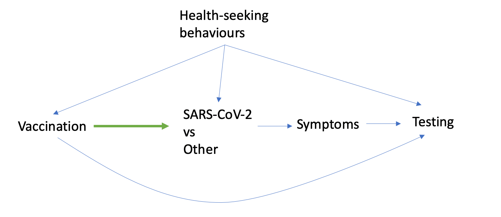
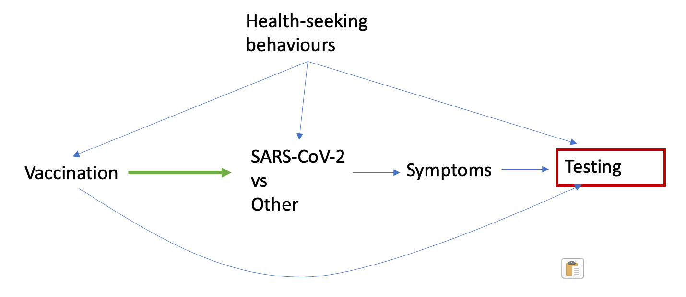

On the use of Cox PH for vaccine effectiveness/ factors associated with test positivity
One of the things I am grappling with right now is trying to wrap my head around the study design and estimands for studies in which testing is a barrier to determining who is positive or not. This blog is really for me to refresh my memory as to how studies are biased when they don’t use the appropriate design in this setting.
As we know from this previous blog post, https://maryaglipay.github.io/posts/blog1/blog7.html, there are biases that result from treating people who don’t test as ‘uninfected’. Misclassification bias happens because those who don’t test are treated as ‘uninfected,’ for both the exposed and unexposed. This is compounded by confounding, because those who are more likely to seek healthcare are more likely to get vaccinated, and also more likely to test. Conversely, those less likely to seek healthcare are less likely to get vaccinated and less likely to test.
Consider the DAG below. These are our assumptions of the relationships between variables, with our association of interest in green.
In a cohort study, we need to try to adjust for health-seeking behaviours in order to avoid bias by confounding. We are still left with misclassification bias though. If we consider this non-differential misclassification bias of the outcome (if we assume that we were able to take care of confounding by health-seeking behaviours), in most cases this will bias the result toward the null (see Rothman (2012), page 135). Making our estimate conservative. However, ‘health-care seeking behaviours’ is a multifactorial concept that is challenging to fully adjust for, which may impact the misclassification, which can bias the result either way.
But what about the test-negative study design, again?
I think the idea behind the test-negative study is that by conditioning on those who test, we kind of have a pool of people with the same kinds of health seeking behaviours. So what happens is we have ‘adjusted’ for the confounder of health seeking behaviours by only including participants with the same access and propensity to be ‘healthy’.

However, Sullivan, Tchetgen Tchetgen, and Cowling (2016) argues that for the most part, health care seeking behaviours are not truly adjusted for by conditioning on those who test. That is, we don’t actually get rid of those arrows from health seeking behaviours to vaccination, infection, and testing- e.g. we can’t assume that the vaccinated and unvaccinated have similar distributions of health seeking behaviours, just because these are people who test. In fact, Sullivan, Tchetgen Tchetgen, and Cowling (2016) argues that it introduces bias by conditioning on a collider, testing, which opens a backdoor path vaccination\(\rightarrow\) health seeking behaviour \(\rightarrow\) testing \(\rightarrow\) symptoms \(\rightarrow\) infection. As a result, Sullivan, Tchetgen Tchetgen, and Cowling (2016) argues that health seeking behaviour must still be adjusted for in this scenario.
The test negative study comes with more implications. If we condition on those who test, what happens is that we open up a colliding path through testing (see Schnitzer (2022)) . And this is why we need to condition on symptoms! Because that is what effectively blocks this backdoor path. With some datasets, this can be challenging because symptoms are not well-collected through administrative data. Sometimes these authors call it a ‘pseudo test-negative design’ (see Sundaram et al. (2021)). Although this is not ideal, we can sometimes assume that everyone who presented for testing had symptoms (if for example, this is a requirement in government testing eligibility criteria. In the case of children, it could be argued that parents have more to lose by testing an asymptomatic child, therefore children who presented for testing may be more likely to be symptomatic).
Estimands for cohort studies and test-negative designs where the outcome is determined by testing
So in our study, we are looking at factors associated with time to first positive test in children and mothers. We are doing a cohort study in which we need to assume that children who did not present for testing did not get infected. Now, it is important to remember that we are looking at predictors of time to first positive test, so we are not exactly using a causal framework. What would happen if we used Cox proportional hazards?
I think similar to the previous blog, we can turn to Jackson and Nelson (2013) for what might happen.

In this case, those infected but did not seek care for their respiratory infection, cells D and J, will both have longer time to censoring, and will be incorrectly placed in cells C and I. Are D (vaccinated) and J (unvaccinated) misclassified in the same way? I.e. can we assume that D and J had equal lengths of follow-up? I think similar to the relative risks discussed earlier, if we can assume that health-seeking behaviour is well adjusted for, then this could be non-differential misclassification of the outcome, which would in most cases bias the association toward the null. In our study, we adjust for a number of health-seeking behaviours, including adherence to NPIs.
What about test-negative studies?
Why do test-negative studies need to use the odds ratio? When we are selecting for inclusion into a test-negative study, similar to a case-control study, we are selecting based on the outcome. This means that we don’t really have a ‘proper’ denominator for something like the relative risk- we manipulated (chose) the number of people who have the outcome, rather than randomly sampling from our target population. This means we don’t really know the marginal distribution of the outcome (i.e. we don’t know what the true prevalence of our outcome is in our target pop). Therefore, we need to use the odds ratio, which is invariant to the marginal distribution of the outcome!
Target populations
A final note on target populations. In a test-negative study, because we are only including those who test, our target population really focuses on people who can test also. In other words, we can only make inference to participants who access testing. However, the test negative study is relatively robust because we have “taken care” of the health seeking behaviour (supposedly), we sacrifice generalizability for internal validity.
In a cohort study, we are including everyone, so technically we are making inference to the larger population- people who test or who don’t. The problem is, it’s difficult to establish internal validity because of all the issues with misclassification and confounding due to health seeking behaviour. If we believe that we’ve taken care of the confounding, we’re still left with misclassification, which technically biases our result toward the null. We need to be willing to assume that this is true. But we still have questionable internal validity- and if we don’t have internal validity, then generalizability is not our biggest concern here.
How do we think about factors associated with testing positive in the context of factors associated with testing in general?
Say we ran two models. A model looking at factors associated with testing in general. And then another model looking at factors associated with testing positive. We found that factors associated with testing were age, sex, and height. Then, we found that factors associated with testing positive were income and education. How do we make sense of this information?
I guess it depends on if these models are independent— ie. if the outcomes are independent of each other. If we think that testing positive and testing alone are unrelated to each other, then it is what it is- we found that age, sex and height were associated with testing. And income and education were associated with testing positive. Our target population is the same- everybody. This means there’s a prediction model, applied to everyone, for who gets testing, and there’s a separate prediction model, for everyone, for who tests positive.
On the other hand, if our model is conditional on being tested, then we are thinking about two populations here. One where it’s everyone, and we’re looking at factors associated with testing. And another where it’s just people who tested, and we’re looking at factors associated with test positivity. This means that there’s a prediction model for who gets in the group, and there’s a prediction model of who tests positive once you’re in the group.
Concluding remarks
The question of how to handle studies in which the outcome is gated by testing behaviour is a challenging one. There are biases that we have to worry about for each type of study, cohort, test negative. Ideally, the outcome would not be gated by testing behaviour- we would have system-wide surveillance of infection. The reality is that surveillance is expensive, and this is not often data that is available to us. The use of test negative designs are an evolving conversation (see Shi, Li, and Mukherjee (2023)) and no doubt that I will be writing about this topic more!